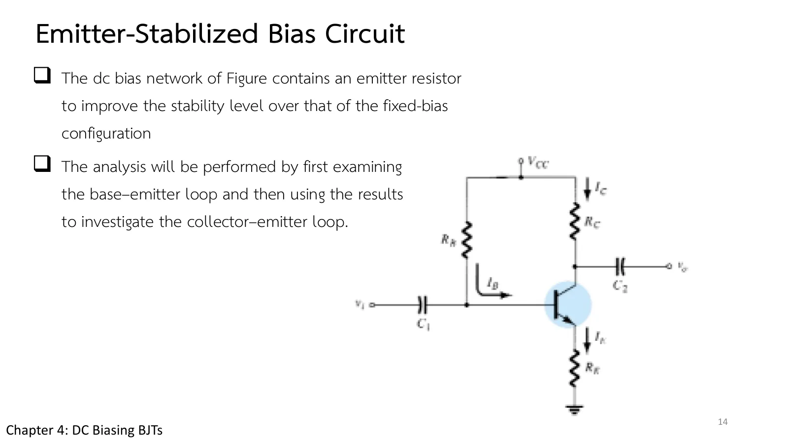
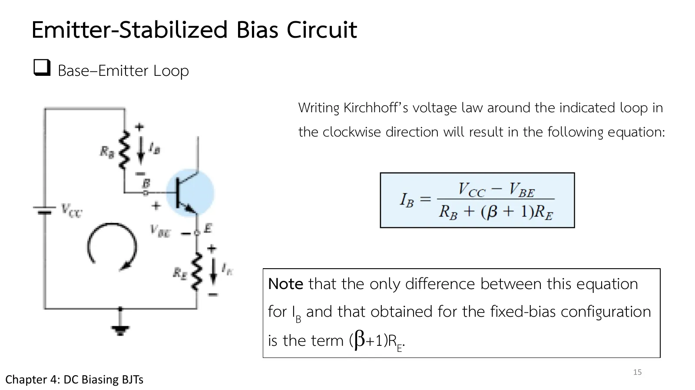
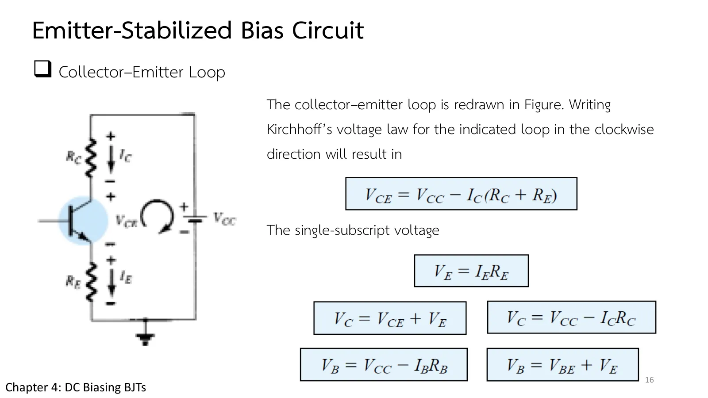
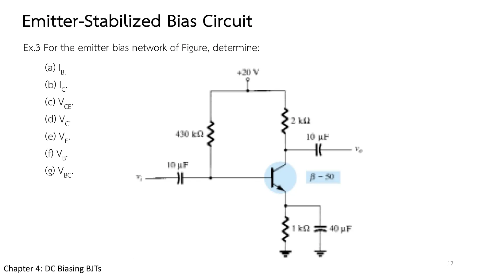
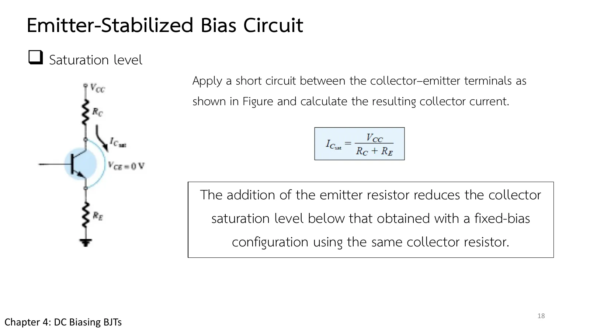
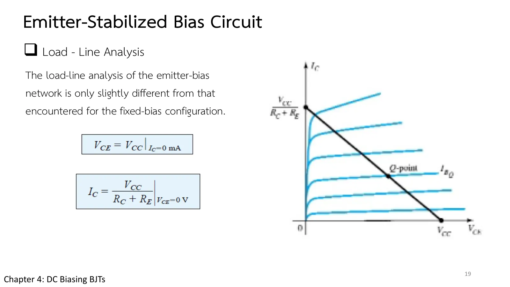

หน้า 4.1 จบด้วยข่าวร้าย: เปลี่ยนทรานซิสเตอร์เป็นตัวที่ β สูงขึ้นสองเท่า กระแสคอลเล็กเตอร์ของวงจรไบแอสคงที่ก็เพิ่มเป็นสองเท่าตาม และ β ก็เปลี่ยนได้เพียงเพราะอุณหภูมิเปลี่ยน ทางแก้แรกใช้ตัวต้านทานเพิ่มเพียงตัวเดียว คือ \(R_E\) ที่ขาอิมิตเตอร์ ซึ่งกดกระแสเบสลงเองเมื่อ β เพิ่ม หน้านี้ให้คุณเลื่อน \(R_E\) แล้วดูกราฟความไวต่อ β ราบลง (ส่วน A) แก้ Ex.3 กับการอิ่มตัว เทียบสองวงจรเมื่อ β เพิ่มสองเท่า (Example 4.5) อ่านจุด Q จากลักษณะสมบัติจริง (Example 4.7) และฝึกเพิ่ม (สไลด์บทที่ 4 หน้า 14–19 · Boylestad หัวข้อ 4.4)
Page 4.1 ended with bad news: swap in a transistor with twice the β and the fixed-bias circuit's collector current doubles too, and β can change with nothing more than temperature. The first cure costs a single resistor, \(R_E\) in the emitter lead, which pushes the base current down by itself when β rises. On this page you move \(R_E\) and watch the β-sensitivity graph flatten (section A), solve Ex.3 with its saturation, compare the two circuits when β doubles (Example 4.5), read Q off real characteristics (Example 4.7), and practise more (chapter 4 slides, pp. 14–19; Boylestad section 4.4).
สไลด์หน้า 14 คือวงจรไบแอสคงที่เดิมที่เติม \(R_E\) ระหว่างอิมิตเตอร์กับกราวด์ (รูป 4.17) เพื่อให้จุด Q เสถียรกว่าเดิม กระแสอิมิตเตอร์ทั้งหมด \(I_E = (\beta + 1)I_B\) ไหลผ่านตัวนี้ แรงดันอิมิตเตอร์จึงยกขึ้น และส่วนที่ยกขึ้นนี้ไปหักออกจากแรงดันที่ดันกระแสเข้าเบส
เขียนกฎแรงดันรอบวงเบส–อิมิตเตอร์ (สไลด์หน้า 15) แล้วจะเห็นว่าสมการของ \(I_B\) ต่างจากไบแอสคงที่เพียงพจน์ \((\beta + 1)R_E\) ในตัวส่วน มองจากเบส \(R_E\) ดูใหญ่ขึ้น \((\beta + 1)\) เท่า และเพราะ β อยู่ในตัวส่วน ทรานซิสเตอร์ตัวที่ β สูงกว่าจึงถูกกดกระแสเบสลงมากกว่าเอง
Slide p. 14 is the old fixed-bias circuit with \(R_E\) added between the emitter and ground (Fig. 4.17) to make Q more stable. The whole emitter current \(I_E = (\beta + 1)I_B\) flows through it, so the emitter voltage rises, and that rise is subtracted from the voltage that drives current into the base.
Write the voltage law round the base–emitter loop (slide p. 15) and the equation for \(I_B\) differs from fixed bias only by the term \((\beta + 1)R_E\) in the denominator. Seen from the base, \(R_E\) looks \((\beta + 1)\) times larger, and because β sits in the denominator, a transistor with a higher β gets its base current pushed down harder, all by itself.


↓ ส่วน A: ดูว่า \(R_E\) ทำให้กราฟความไวต่อ β ราบลงได้แค่ไหน และต้องจ่ายอะไรแลก
↓ Section A: see how far \(R_E\) flattens the β-sensitivity graph, and what it costs
สไลด์หน้า 16 ทำวงคอลเล็กเตอร์ต่อ: \(R_C\) กับ \(R_E\) แบ่งแรงดันแหล่งจ่ายกัน \(V_{CE} = V_{CC} - I_C(R_C + R_E)\) แล้วแรงดันเทียบกราวด์หาได้จาก \(V_E = I_ER_E\), \(V_C = V_{CC} - I_CR_C\) และ \(V_B = V_{BE} + V_E\) ระหว่างลองภาพจำลอง จับตาแถว \(V_E\) ในแผงค่าไว้: ยิ่ง \(R_E\) ใหญ่ มันยิ่งกินแรงดันไปจาก \(V_{CE}\)
Slide p. 16 finishes the collector loop: \(R_C\) and \(R_E\) now share the supply, \(V_{CE} = V_{CC} - I_C(R_C + R_E)\), and the voltages to ground follow from \(V_E = I_ER_E\), \(V_C = V_{CC} - I_CR_C\) and \(V_B = V_{BE} + V_E\). As you try the simulation, keep an eye on the \(V_E\) row of the readings: the larger \(R_E\), the more of the supply it takes from \(V_{CE}\).

เริ่มจากวงจรของ Ex.3 เลื่อน \(R_E\) ลงจนเป็น 0 แล้วกราฟล่าง (\(I_C\) เทียบกับ β) กลับเป็นเส้นตรงของวงจรไบแอสคงที่ เพิ่ม \(R_E\) แล้วเส้นโค้งราบลง: จุด Q ขยับน้อยลงเมื่อ β เปลี่ยน แต่ \(I_{C\text{sat}}\) และ \(V_{CE}\) ก็ลดลงด้วย เพราะ \(R_E\) กินแรงดัน \(V_E\) ไปส่วนหนึ่ง
Start from the circuit of Ex.3. Move \(R_E\) down to 0 and the lower graph (\(I_C\) against β) becomes the straight line of fixed bias; raise \(R_E\) and the curve flattens: Q moves less when β changes, but \(I_{C\text{sat}}\) and \(V_{CE}\) also fall, because \(R_E\) takes a share \(V_E\) of the supply.
Ex.3 (สไลด์หน้า 17) ใช้ \(R_E\) = 1 kΩ คู่กับ \(R_B\) = 430 kΩ ก่อนเริ่มคำนวณ ลองคิดว่า \(R_E\) ตัวนี้ดูใหญ่เท่าใดเมื่อมองจากเบส แล้วเทียบกับ \(R_B\) สไลด์หน้า 18–19 ถามต่อเรื่องการอิ่มตัว: ลัดวงจรคอลเล็กเตอร์กับอิมิตเตอร์ แล้ว \(R_C\) กับ \(R_E\) จะอนุกรมกันคร่อม \(V_{CC}\) ระดับอิ่มตัวจึงต่ำกว่าวงจรไบแอสคงที่ที่ใช้ \(R_C\) เท่ากัน และเส้นโหลดลากจาก \(V_{CC}/(R_C + R_E)\) ถึง \(V_{CC}\)
Ex.3 (slide p. 17) pairs \(R_E\) = 1 kΩ with \(R_B\) = 430 kΩ. Before you calculate, work out how large that \(R_E\) looks from the base and compare it with \(R_B\). Slides pp. 18–19 then ask about saturation: short the collector to the emitter and \(R_C\), \(R_E\) sit in series across \(V_{CC}\), so the saturation level is lower than for fixed bias with the same \(R_C\), and the load line runs from \(V_{CC}/(R_C + R_E)\) to \(V_{CC}\).



\(V_{CC}\) = 20 V, \(R_B\) = 430 kΩ, \(R_C\) = 2 kΩ, \(R_E\) = 1 kΩ, β = 50 จงหา (a) \(I_B\) (b) \(I_C\) (c) \(V_{CE}\) (d) \(V_C\) (e) \(V_E\) (f) \(V_B\) (g) \(V_{BC}\) แล้วหากระแสอิ่มตัว
\(V_{CC}\) = 20 V, \(R_B\) = 430 kΩ, \(R_C\) = 2 kΩ, \(R_E\) = 1 kΩ, β = 50. Determine (a) \(I_B\) (b) \(I_C\) (c) \(V_{CE}\) (d) \(V_C\) (e) \(V_E\) (f) \(V_B\) (g) \(V_{BC}\), then the saturation current.
แผงข้างภาพแสดงเส้นโหลดกับจุด Q และสลับเป็นแรงดันของโหนดในขั้นที่ 3–4 ลองตอบก่อน
The side panel shows the load line with Q, and switches to the node voltages in steps 3–4. Try it first.
วงจรของ Ex.3 แต่ β = 100 จงหา \(I_B\), \(I_C\), \(V_{CE}\) แล้วเทียบการเปลี่ยนแปลงกับวงจรไบแอสคงที่ของหน้า 4.1 (β 50 → 100: \(I_C\) 2.35 → 4.71 mA, \(V_{CE}\) 6.83 → 1.64 V)
The circuit of Ex.3 with β = 100. Find \(I_B\), \(I_C\), \(V_{CE}\), and compare the changes with the fixed-bias circuit of page 4.1 (β 50 → 100: \(I_C\) 2.35 → 4.71 mA, \(V_{CE}\) 6.83 → 1.64 V).
ลองตอบก่อน แล้วดูจุด Q ทั้งสองบนเส้นโหลดเดียวกัน
Try it first, then see both Q-points on the same load line.
วงจรไบแอสอิมิตเตอร์ \(V_{CC}\) = 18 V, \(R_C\) = 2.2 kΩ, \(R_E\) = 1.1 kΩ กับทรานซิสเตอร์ที่มีลักษณะสมบัติในรูป 4.26b (เส้น \(I_B\) ห่างกันเท่า ๆ กัน 1.1 mA ต่อ 5 µA) (a) จงวาดเส้นโหลด (b) จุด Q อยู่ที่จุดตัดกับเส้น \(I_B\) = 15 µA จงหา \(I_{CQ}\), \(V_{CEQ}\) (c) หาเบตาแบบไฟตรงที่จุด Q (d) ใช้เบตานั้นหา \(R_B\) ที่ต้องใช้ และเสนอค่ามาตรฐาน
An emitter-bias circuit with \(V_{CC}\) = 18 V, \(R_C\) = 2.2 kΩ, \(R_E\) = 1.1 kΩ and the transistor of Fig. 4.26b (equally spaced \(I_B\) curves, 1.1 mA per 5 µA). (a) Draw the load line. (b) For Q at its intersection with the \(I_B\) = 15 µA curve, find \(I_{CQ}\) and \(V_{CEQ}\). (c) Find the dc beta at Q. (d) With that beta, find the required \(R_B\) and suggest a standard value.
ภาพจำลองใช้ทรานซิสเตอร์ β = 220 และสร้างวงจรด้วย \(R_B\) ที่คำนวณได้ ลองตอบก่อน
The simulation uses a β = 220 transistor and builds the circuit with the computed \(R_B\). Try it first.